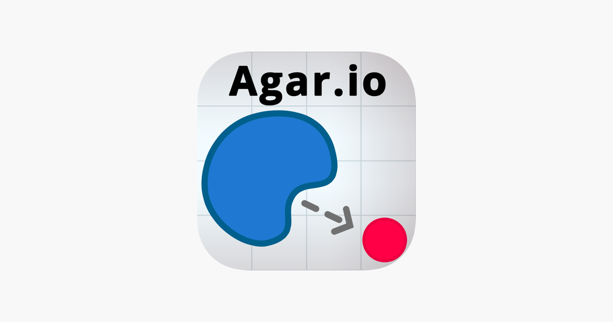
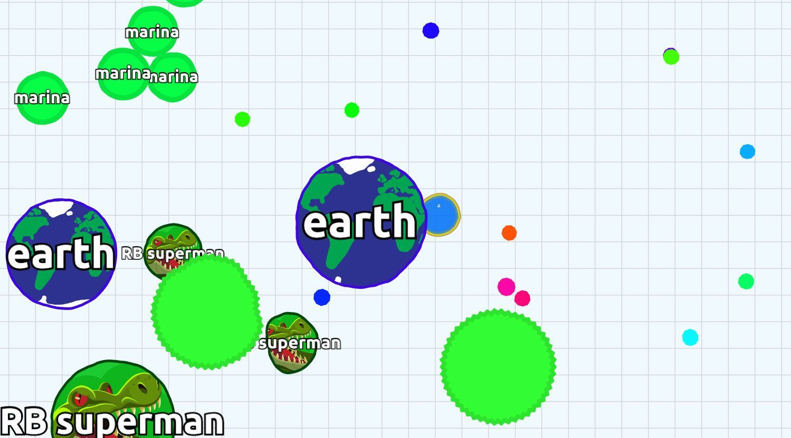
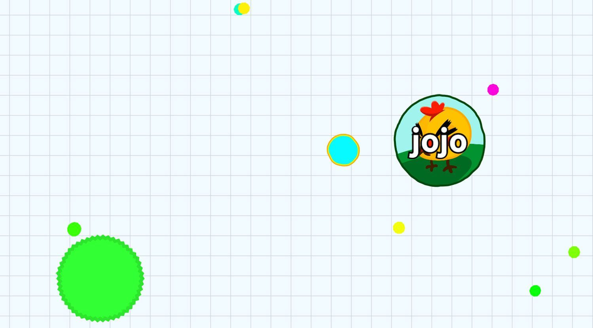

Introduction
Agar.io is the pioneering multiplayer online .io game created by Matheus Valadares, where players control a simple cell in a massive petri dish. What makes it unique is its brilliantly simple premise combined with deep, high-stakes survival mechanics. You start as a tiny dot and must consume scattered pellets and smaller players to grow, while desperately avoiding being eaten by larger cells. Players love Agar.io for its instant accessibility, intense real-time competition, and the satisfying progression from a vulnerable speck to a massive, screen-dominating blob. The constant threat of being split and consumed creates an adrenaline-pumping experience that keeps millions of players coming back daily to climb the global leaderboards.
Getting Started

Starting your Agar.io journey is incredibly straightforward. Simply visit the official website, enter a custom name or nickname, and select your game mode—FFA (Free-For-All), Teams, Battle Royale, or Experimental. Once spawned, you begin as a small cell. Use your mouse cursor to direct your cell's movement; your cell will smoothly follow your pointer. To grow, navigate toward the tiny colored pellets scattered across the map. As your mass increases, your movement speed slightly decreases. When you encounter a player smaller than you, simply move over them to consume their mass. However, if a larger cell approaches, move your mouse away to flee. You can press the Spacebar to split your cell, launching half your mass forward to trap or eat smaller targets, but this leaves you temporarily vulnerable. Pressing the 'W' key ejects a small amount of mass, which can be used to feed teammates in Teams mode or lure smaller players into a trap. Mastering these basic controls is your first step to dominating the petri dish.
Basic Tips
1. Farm Pellets Early: When you first spawn, ignore other players and focus entirely on eating the small colored pellets. This is the safest way to build your initial mass before engaging in combat. 2. Use the Spacebar Wisely: Splitting is your primary attack, but it halves your size. Only split when you are at least 30% larger than your target to ensure you consume them and still retain enough mass to survive. 3. Watch the Green Viruses: The large green spiky cells are viruses. If you are large and touch one, you will explode into many tiny pieces. Use them to hide behind if you are small, or to trap larger players by splitting them into the virus. 4. Corner the Map Edges: The map has borders. Players trapped against the edge cannot move backward. Use the edge of the screen to trap smaller cells against the boundary where their escape routes are limited.
Advanced Strategies

1. The Split-Trick (Popping): When chasing a smaller player near a virus, split your cell to shoot a piece into the virus. This causes you to explode into many pieces, but the momentum will carry your main body forward, allowing you to bypass the virus and consume the fleeing player. 2. Teammate Feeding (Macroing): In Teams mode, press 'W' repeatedly to eject mass to a larger teammate. They can then use this massive size to dominate the server or protect you. Coordinate this by staying close and feeding continuously. 3. The Double Split: If you are significantly larger than a target, press Spacebar twice in rapid succession. This shoots two halves of your cell forward, increasing your reach and making it much harder for the target to dodge your attack. 4. Baiting with Ejecta: Eject mass toward a smaller player to lure them in. When they move to eat the mass, quickly split and consume them. This turns their greed into your advantage.
Pro Tips

1. Macros and Hotkeys: Bind your split, eject, and double-split commands to specific mouse buttons or keyboard macros. This reduces reaction time from milliseconds to microseconds, crucial for outmaneuvering skilled opponents. 2. Mass Management: Never eat a virus when you are over 500 mass unless you are intentionally splitting to attack. Losing mass to a virus unnecessarily gives your enemies a massive advantage. 3. Predictive Splitting: Don't split where the enemy is; split where they are going. Anticipate their movement direction and aim your split slightly ahead of their trajectory to guarantee a hit.
Conclusion
Agar.io remains a masterpiece of minimalist game design, offering endless replayability through its pure, skill-based survival gameplay. Whether you are farming pellets, executing a flawless double-split, or dominating a Teams match, every second is a thrill. Jump into the petri dish, refine your strategies, and see if you have what it takes to reach the number one spot on the global leaderboard!